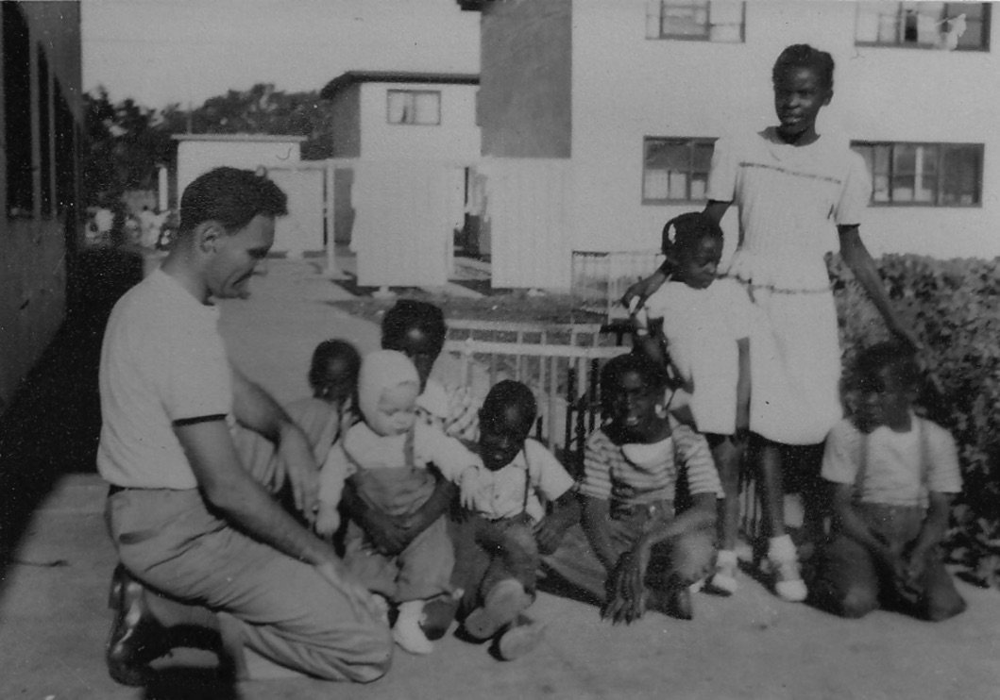
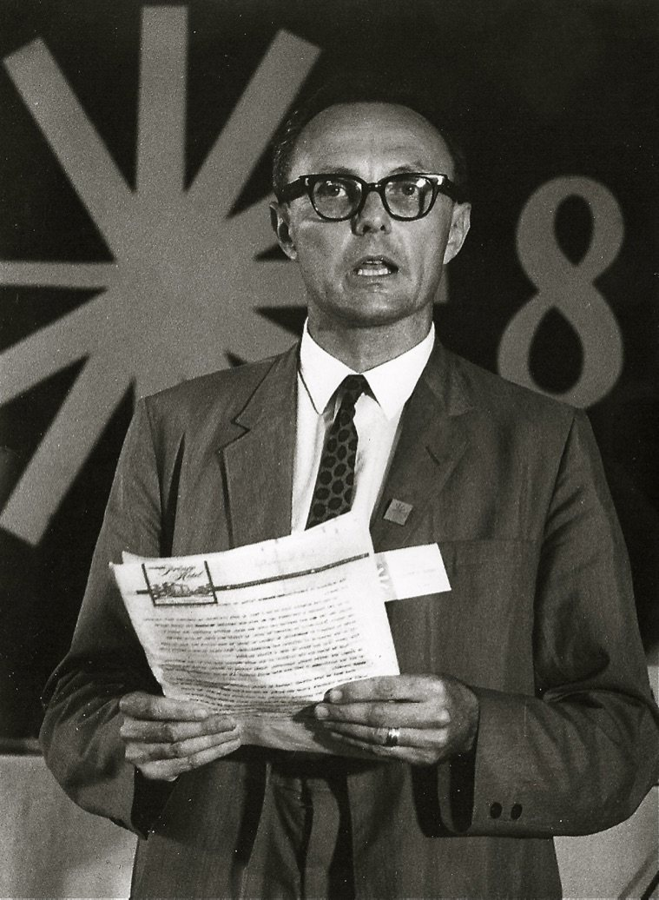
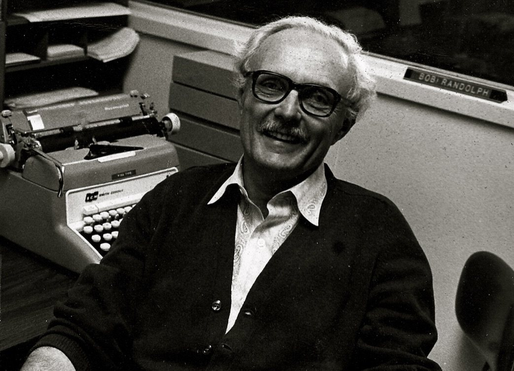
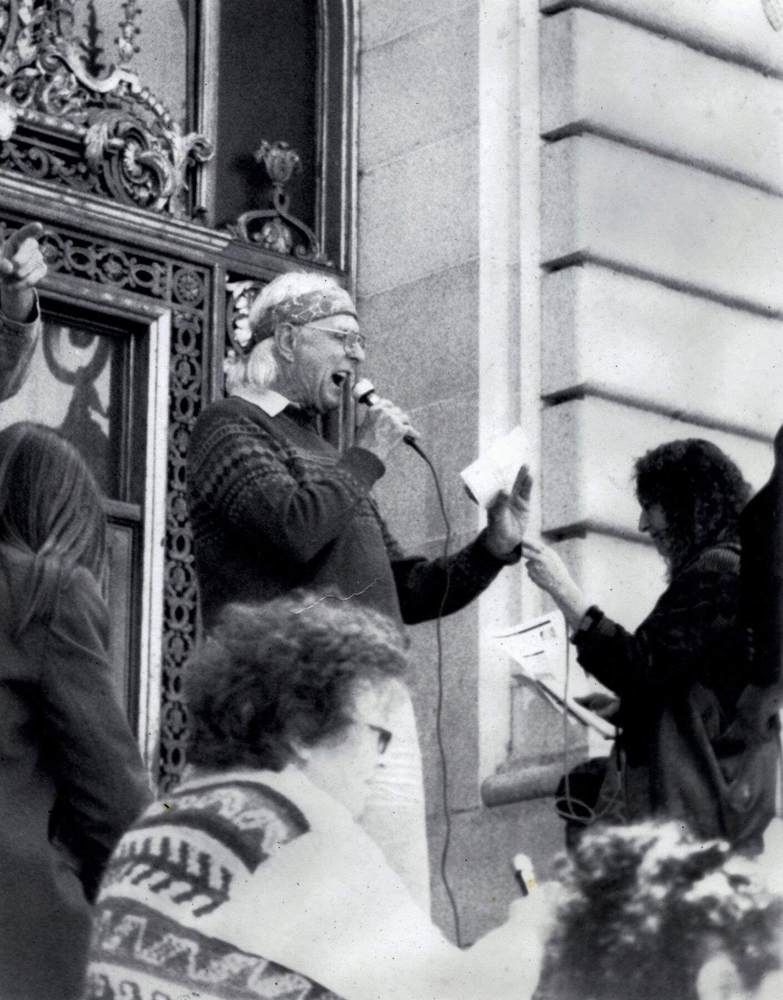

About Bob
Bob Randolph wrote for decades under his own name and under the pen name El Tecolote Blanco — "the White Owl." He was a UC Berkeley–trained economist whose California state career ended after he invoked the Fifth Amendment before the House Un-American Activities Committee over a 1960s trip to Cuba; blacklisted from his profession afterward, he supported himself through teaching, newspaper writing, and freelance real estate appraisal — while writing poetry that never stopped being political.
He was named House Poet of the Radical Philosophy Association in 1999, and his poems were read at RPA's national conferences and its Cuba Conferences through the 2000s. He read regularly at Berkeley's Fellowship Café & Open Mic and the Berkeley Senior Center, and was billed by Poetry Flash in 2004 as "Cuban poet Bob Randolph, author of Cuban Poems."
The Picture of Dorian America grew out of a two-year collaboration (2008–2009) between Bob and Mark Wotton, with their mutual friend Harold Murphree, who went through thousands of Bob's documentary photographs to choose the images. The book was meant to represent Bob's best work, and to Bob “best” meant the fiercely raw political exposés of dirty wars and capitalism. The two of them worked in constant, productive tension, because the book also had to hold what Bob saw just as clearly: the simple beauty of the natural world and the dignity and courage of the human spirit. Weaving all of that into a book that still carried his revolutionary poetry at full strength was the feat. Bob prepared it under his own imprint, Randolph House Press, as a fully edited, print-ready manuscript that was never released in his lifetime. A print-on-demand edition, with its own ISBN so it enters library and bookstore catalogs the way a traditionally published book would, will finally give it a first real publication. That, along with the rest of his work, is what this archive exists to do.
Bob considered The Picture of Dorian America his seminal work, which is where the book gets its title, an echo of Oscar Wilde's The Picture of Dorian Gray. In Wilde's novel the worldly voice at Dorian's ear is Lord Henry Wotton, and the editor who carried Bob's book forward is Mark Wotton. Mark can't vouch for any family connection, but nobody planned the echo.
Bob's own numbered, alphabetized, and theme-coded index lists 1,775 poems — the scope of the complete works this archive is working to catalogue and publish in full, alongside his photography and his own recorded readings of his work.
Bob published the way the Beats did — in chapbooks, the small stapled booklets that movement revived in postwar San Francisco to put uncensored writing straight into readers' hands. He worked in that same North Beach and Berkeley world of self-published, politically charged verse, and — still holding forth daily at Peet's in North Berkeley into his nineties — he was among the last survivors of that generation of Bay Area poets.
His politics ran straight through the radical Bay Area of the 1960s and '70s. Bob was a figure around the Black Panther Party and Eldridge Cleaver. He dedicated his chapbook El Tecolote Blanco: Space and Time Travel to Cleaver, and Cleaver wrote the introduction to another, El Tecolote Blanco: A Bob Randolph Sampler (1995), in which he calls Bob the “new Poet Laureate of the U.S.A.” Bob's work never stopped insisting that poetry and political struggle belong together.
Bob was generous in practice, not only in verse. At 88, when he sold the building he lived in, in rent-controlled Berkeley, for a million dollars, he made it a condition that the current tenants could stay as long as they wished. He gave money to people on the street and to just about anyone who asked, and when he could he gave work instead of a handout, hiring street people for jobs of his own. His neighbor Larry Melnick, a painter who lived in senior housing, was an artist Bob already knew well enough to put one of his paintings on the cover of Bob's 1991 chapbook I AM WRITING OF HANDGRENADES, BUTTERFLIES AND KISSES. In 2008 Bob bought Larry's work so that Larry could have a one-man show: Awakenings, a 40-year retrospective of Larry's oil paintings, at the Dominican School of Philosophy and Theology on Vine Street, in July 2008. Larry died of pancreatic cancer just months later. Bob read his poems at the show with a young poet, and some of those readings are in the Taped Live Readings. In those same last months, Bob also deliberately stood behind Harold, who died unexpectedly. The book the three of them made was Harold's swan song, and it is dedicated to his memory.